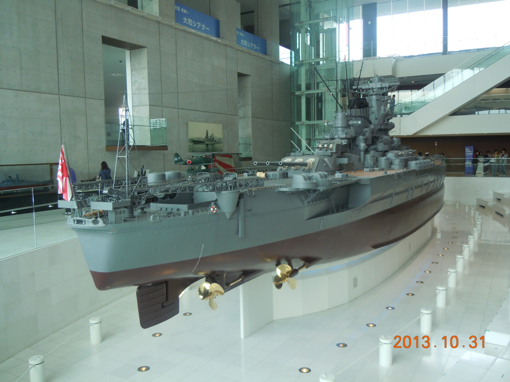
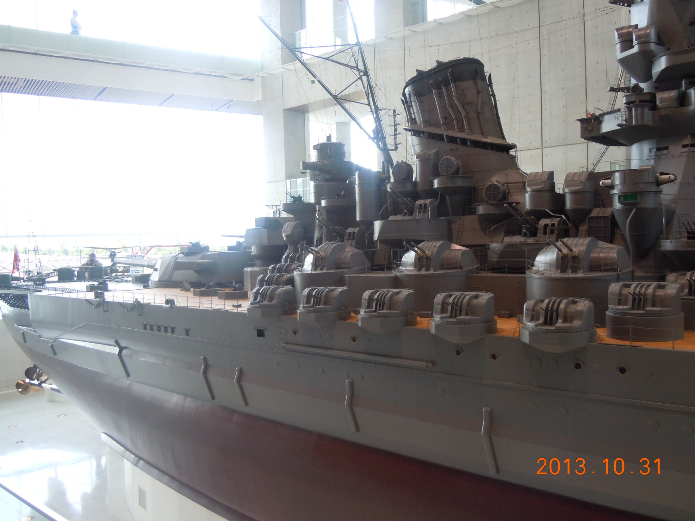
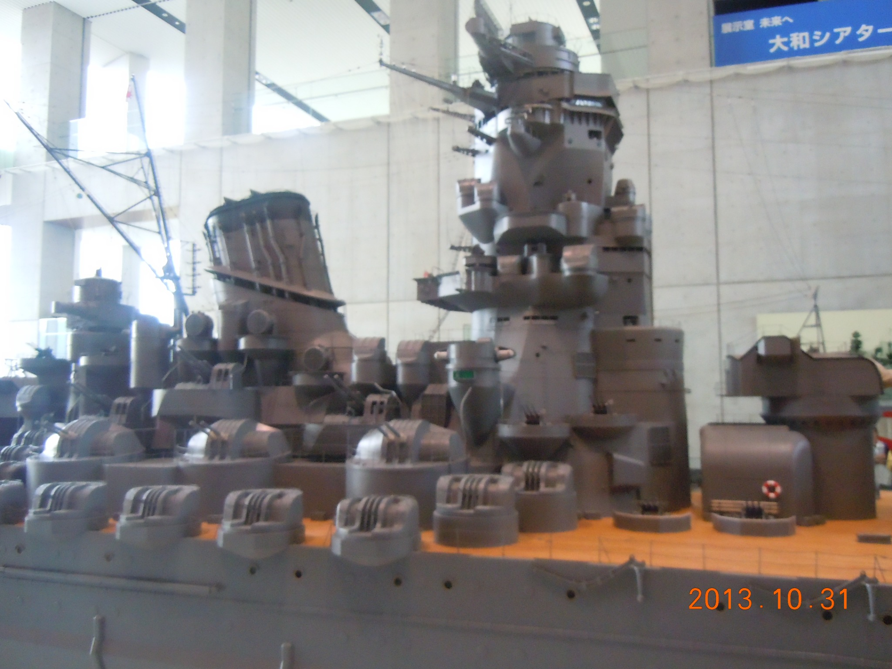
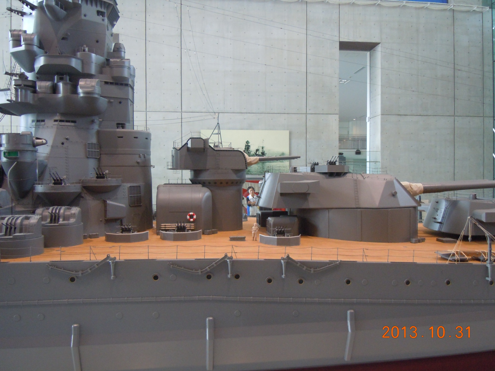
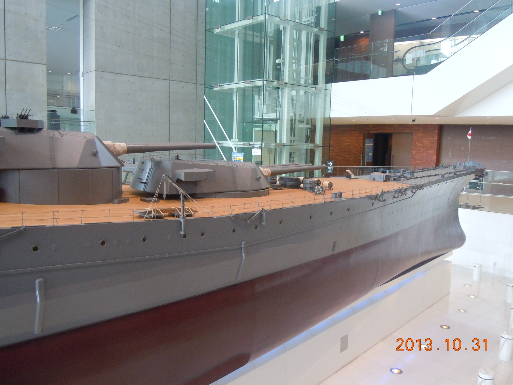
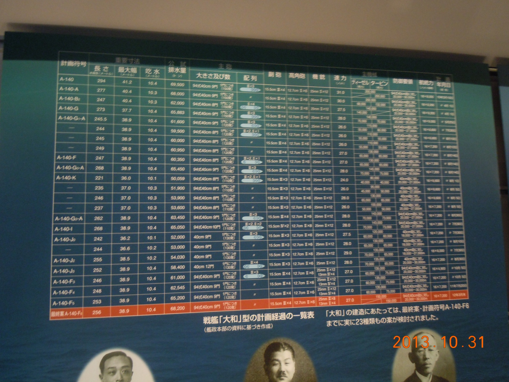
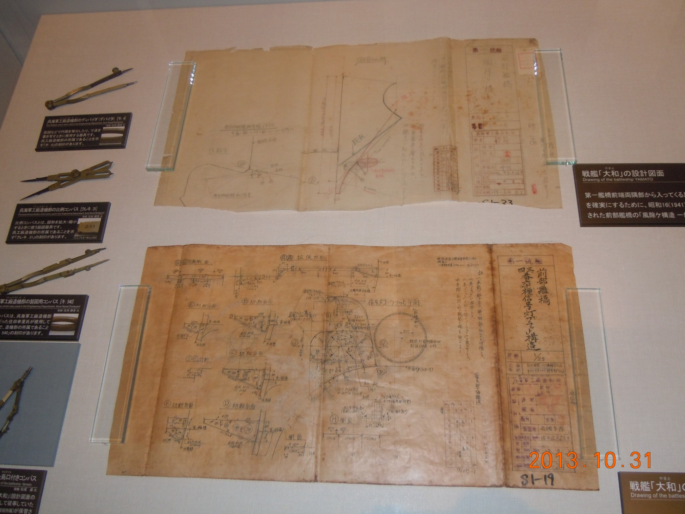
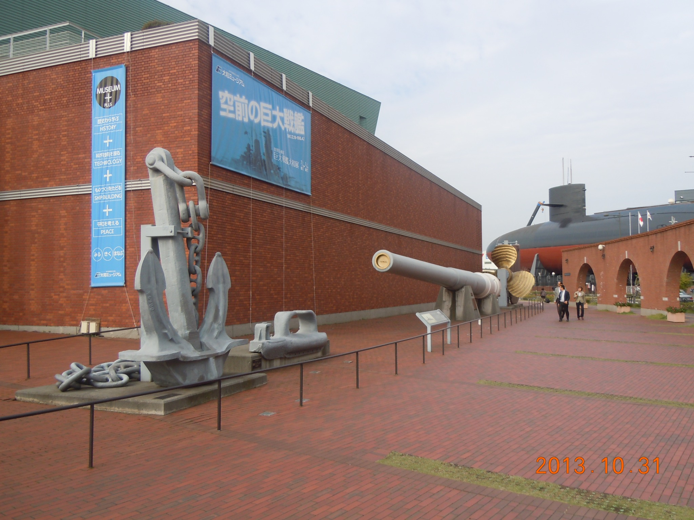
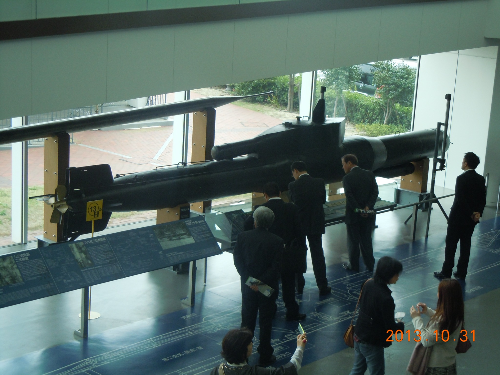
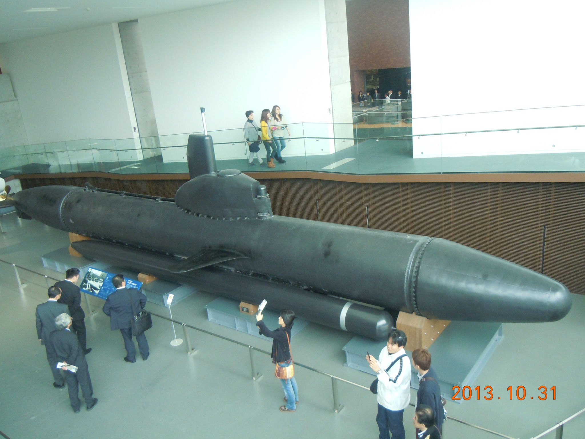

Yamato Museum
| Location | 5-20 Takaramachi, Kure, Hiroshima Prefecture, Japan |
|---|---|
| Visited | 31 October 2013 |
| Website | Yamato Museum |

(Author's photograph, 31 October 2013)
Museum Report
The Yamato Museum in Kure is famous primarily for the very large model of the battleship Yamato. This report is based on a visit in 2013, however the museum has recently been extensively renovated, and reopened in April 2026.
My visit (and in fact an entire trip to East Asia) was based on a media report I had seen that the museum had built a full-size replica of Yamato’s bridge as a temporary exhibit, and I went there expecting to see a copy of her forward superstructure, but in fact they had just created a replica of the inside of her navigation bridge. But the trip was not wasted, as this was a very well-done museum.
The centre-piece of the museum was, of course, the model. The 1:10 scale model is extraordinarily detailed. It is 26.3m long, and represents Yamato in her final 1945 configuration. The model is mounted in a hall with raised viewing platforms allowing examination from multiple angles. My only criticism here is that there is a large window behind the model, and the lighting made it difficult for a rank-amateur photographer to get decent photographs from many of the angles.




In addition to the model there are extensive galleries containing artefacts, photographs, documents, and information boards – primarily about Yamato, but also covering the history of Kure shipbuilding, and other Japanese warships. The information boards and captions were primarily in Japanese, but there were some English translations.


Major artifacts at the museum include an outdoor display containing a 16-inch gun, propellor, and anchor salvaged from the battleship Mutsu which blew up and sank nearby in 1943.

There are also two museum ships here. Firstly, a Type 10 Kaiten prototype suicide midget submarine. This was a coast-defence development of the Kaiten concept rather than the better-known Type 1 based on the Type 93 torpedo.

Secondly they have a Kairyu midget submarine. This was a development of the Type A midget submarines (as used at Pearl Harbour, Sydney and other locations). They were originally armed with two torpedoes, however due to a shortage of torpedoes many units were adapted to carry a large charge of TNT in the bow. As far as I know this is the only surviving complete example of a Kairyu – however I understand that the US Naval Submarine School in Groton, CT, has an example which has been cut open to allow examination of the interior of the boat.

I understand that the museum also has a Yarrow-type boiler formerly installed in the battle cruiser Kongo on display, however I don’t recall seeing this during my visit, and it may have been added to the museum during the renovation.
The museum is easily accessible from Hiroshima by train (an approx. 45-minute trip). It is within walking distance of the train station. It is virtually next door to the JMSDF Submarine Museum which has the post-war submarine Akishio (you can see this in the background of the photo of the Mutsu artifacts), and also within easy walking distance of the ferry terminal to go to Etajima island.
The Yamato Museum was a great museum before the recent renovation. I can only imagine that it is even better now.